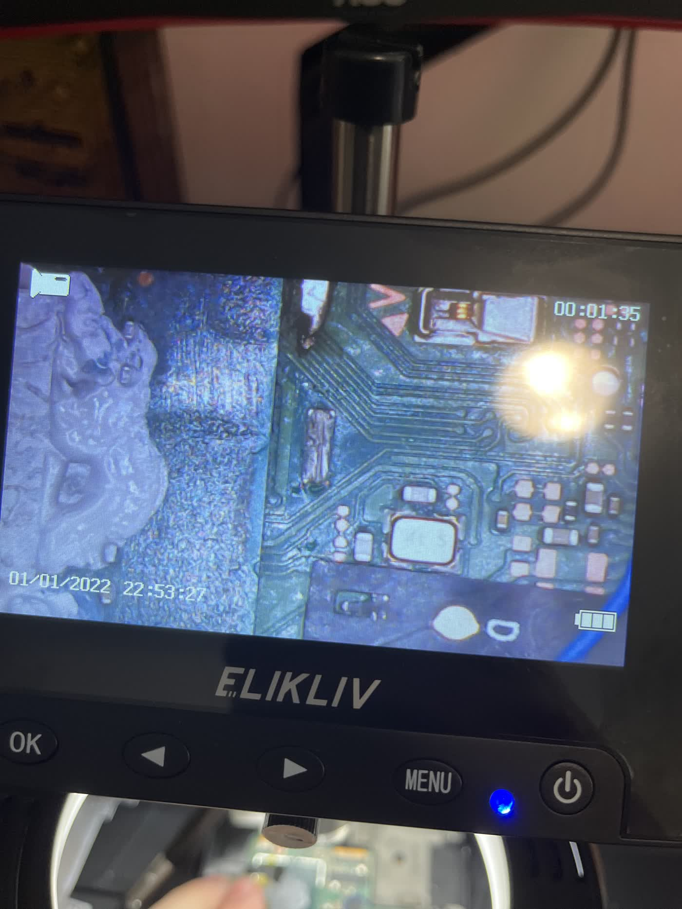
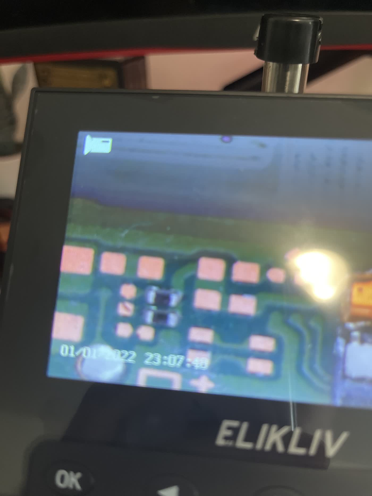
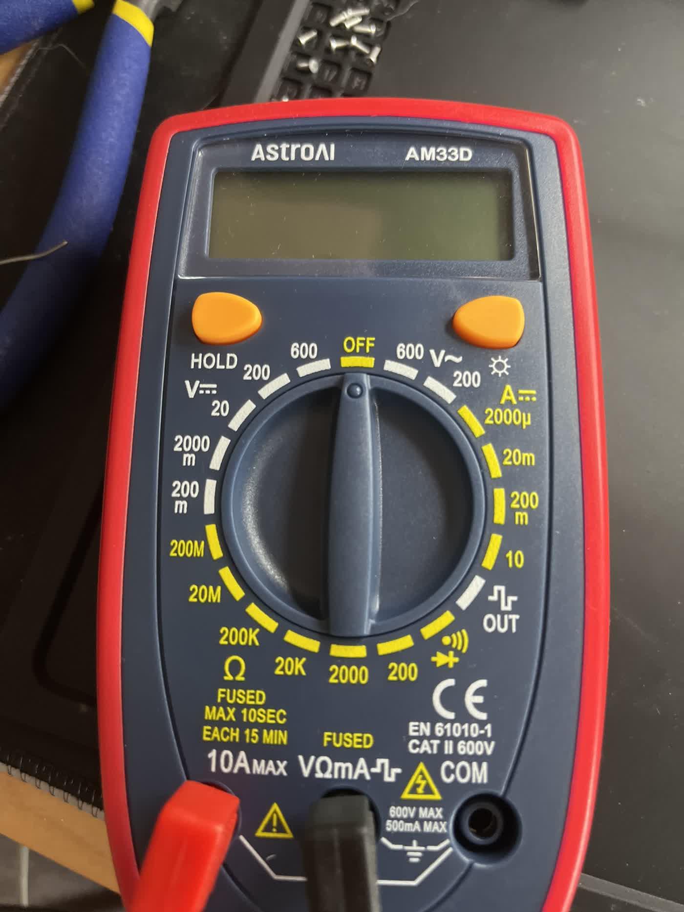
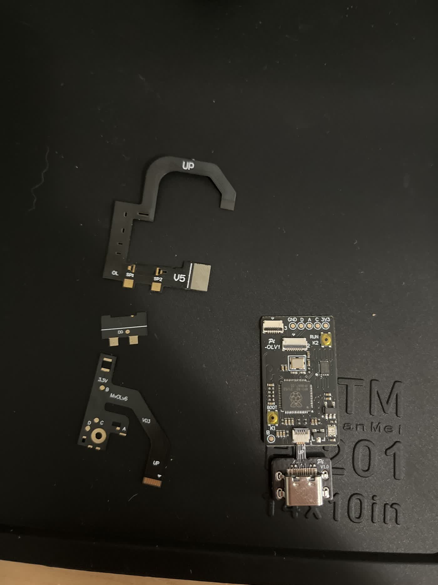
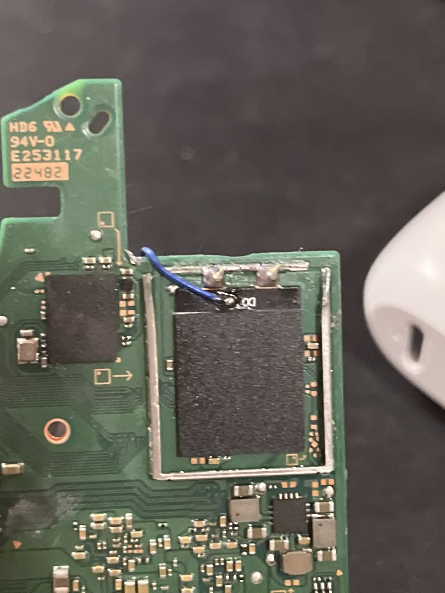
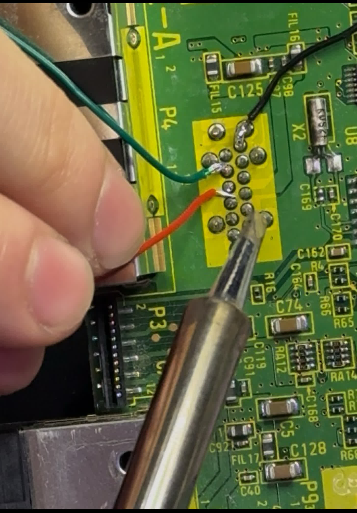
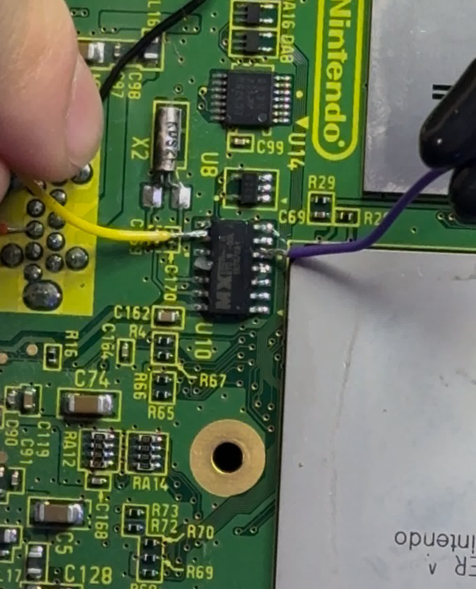
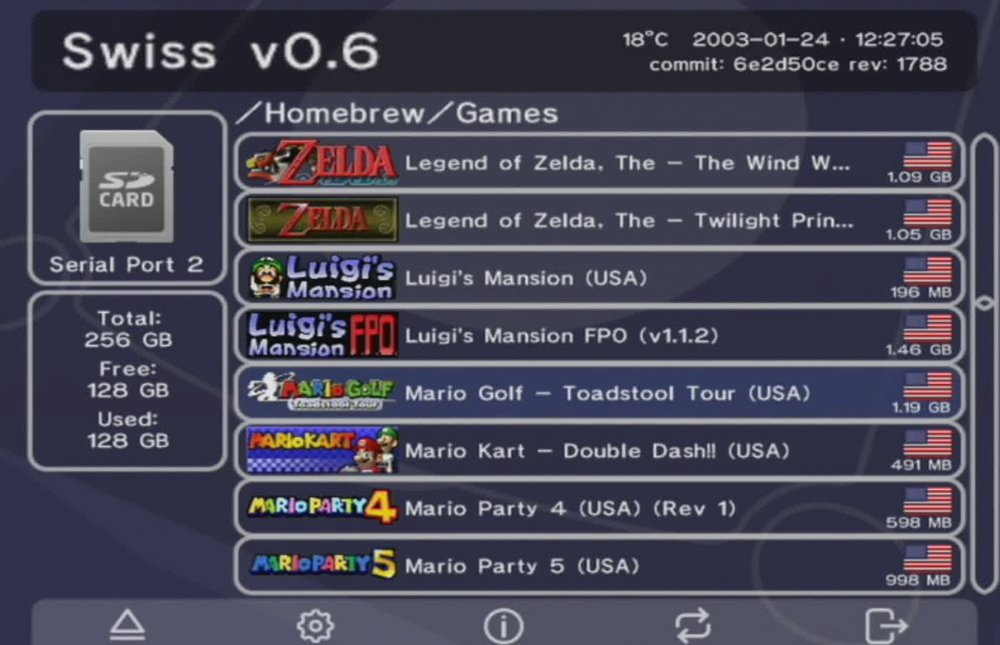

Game console repair
GameCube, Wii, DS, Xbox, PlayStation, Switch, and other systems. Troubleshooting, cleanup, part swaps, software recovery, and getting neglected machines back into playing shape.
Console repair • mods • tech rescue
Personal Tech Wiz is a one-man repair and mod bench built around practical fixes, careful teardown work, and making old tech useful again.

GameCube, Wii, DS, Xbox, PlayStation, Switch, and other systems. Troubleshooting, cleanup, part swaps, software recovery, and getting neglected machines back into playing shape.
Controller mods, software mods, shell swaps, storage upgrades, homebrew setups, and clean custom builds that match the way you actually play.
Junk computers, broken game consoles, older iPhone screens, and forgotten devices are welcome. If it has a board, a screen, or a weird problem, it is worth a look.
Services
The shop is growing tool by tool. The focus right now is honest hands-on repair, careful upgrades, and building toward bigger board-level jobs over time.
No power, no video, bad ports, disc/read issues, overheating, failed storage, dirty internals, and mystery problems.
DS-family systems, Switch hardware, shell/button work, screens, battery areas, and general refurbishment.
Custom shells, button swaps, cleaning, drift troubleshooting, and personality upgrades for controllers you want to keep using.
Homebrew-style setups, SD card prep, console utilities, backups, and software fixes where legally appropriate.
Older iPhone screen repair and small-device fixes when parts and risk make sense.
Broken computers and consoles can become parts donors, repair practice, refurbished machines, or future projects.
Bench photos
Initial gallery pulled from the PTW folder on the 4TB drive. Captions can be tightened once each job is labeled.







Resume
Resume content is staged here as a web résumé. Once the real résumé file is identified, this section can be replaced with exact work history and a downloadable PDF.
I like taking in broken consoles, old computers, and weird tech because most of it still has life left. The goal is simple: diagnose carefully, repair what makes sense, mod when it improves the device, and keep useful hardware out of the junk pile.
Contact
Send the device model, what happened, what you want done, and a few clear photos. If it is a good fit, Personal Tech Wiz can take a look.
Local one-man repair/mod bench. Availability depends on parts, tool access, and job risk.